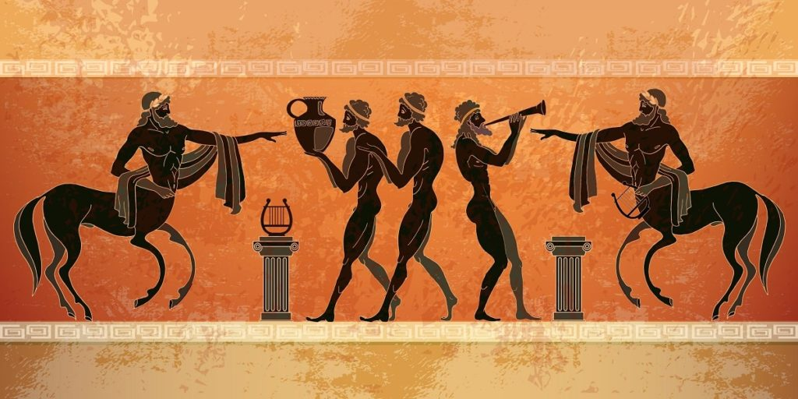
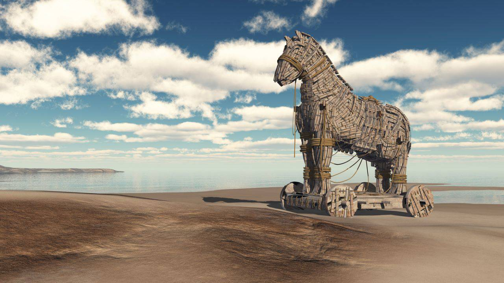
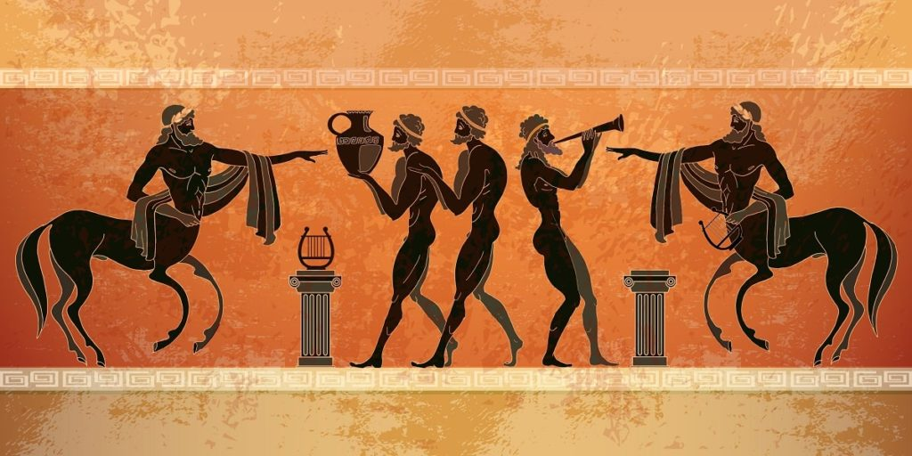
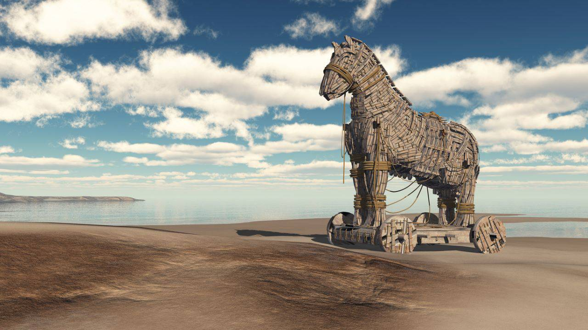
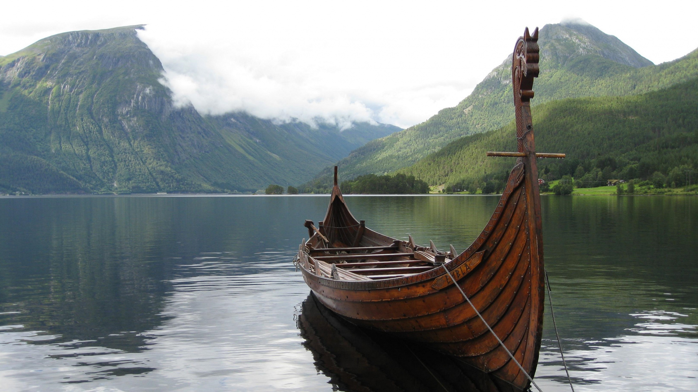
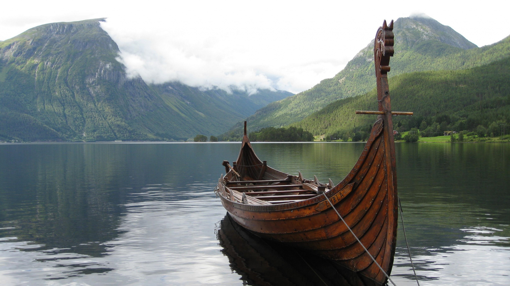
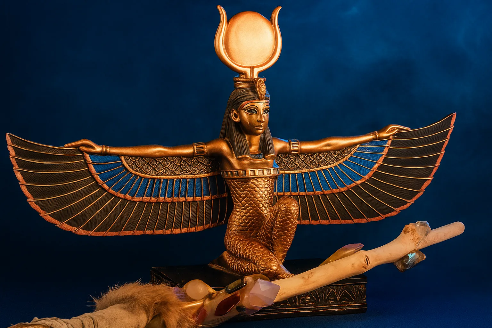
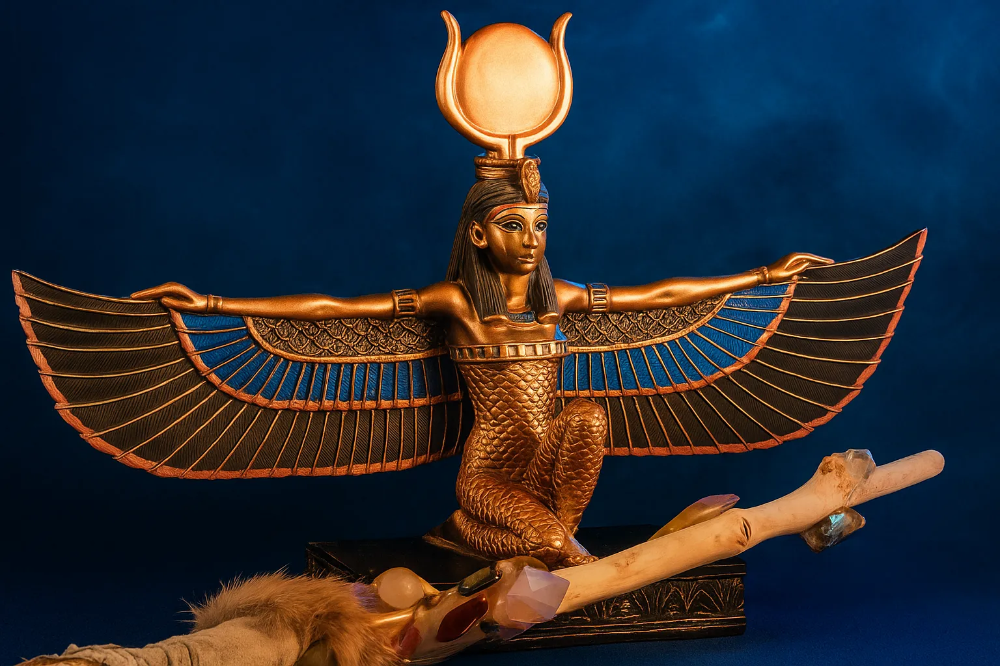

Tipos de mitología
 

La mitología griega es el conjunto de relatos míticos desarrollados en Grecia en la Edad Antigua. Es una de las mitologías más conocidas del mundo, dado que más tarde estos relatos fueron incorporados por los romanos y transmitidos al resto del mundo occidental.
Por esta razón, a menudo se habla de la mitología “grecolatina” o “grecolatina”, pues los romanos adoptaron parte de la mitología griega y la fusionaron con sus propias creencias y relatos.
Según la mitología griega, los dioses que gobernaban a la humanidad pertenecían a la generación más joven de dioses. Eran conocidos como dioses del Olimpo, pues vivían en lo alto del monte Olimpo. Se creía que habían derrotado a los dioses antiguos, llamados titanes, que los habían engendrado. Tras vencerlos, los principales dioses olímpicos se repartieron los tres reinos que componen el mundo:
La tierra: Era gobernada por Zeus (Júpiter para los romanos), el dios padre y señor del cielo y del relámpago.
El mar: Era gobernado por Poseidón (Neptuno para los romanos), el dios de los mares y las tormentas.
El inframundo: Era gobernado por Hades (Plutón para los romanos), el dios del reino de los difuntos.
Historia: Los dioses engendraron a otros dioses y a los semidioses, héroes de ascendencia divina como Heracles (Hércules para los romanos), así como a ninfas, faunos y otras criaturas míticas, entre ellas monstruos célebres como la hidra de Lerna, las sirenas o el cancerbero. Estos personajes protagonizaron innumerables historias que fueron transmitidas por aedos (cantores épicos) y preservadas por escritores griegos y romanos.
 


 
